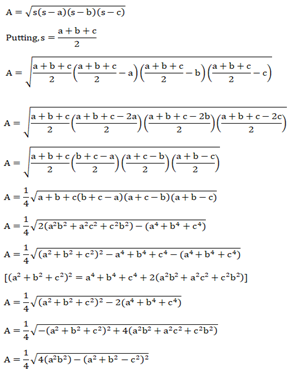
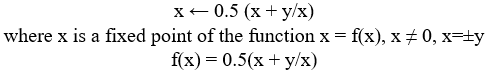

Heron of Alexandria was a Greek mathematician and engineer who provided many major contributions to
mathematics. These consisted of his methods for iteratively computing the square and cubed roots of
a number, the Heronian mean and finding the area of any triangle or quadilateral using only it's side
lengths. All of these methods originated around 60AD, being published in his work 'Metrica'.
Introduction
Heron of Alexandria was a Greek mathematician and engineer who provided a number of major contributions
to the field of mathematics through his work, Metrica (add ref). This work was first published around
60AD, but are these methods are still useful and relevant today? In this article firstly Heron’s method
for calculating the area of a triangle or quadrilateral are discussed before looking at his iterative
method for finding a square root and calculating the Heronian mean. Advantages and disadvantages of these
approaches are also considered.
Area of a Triangle or Quadrilateral
Heron’s Formula can be used to find the area of any triangle, regardless of if it is right-angled or not.
This allows you to find the area of scalene, isosceles and equilateral triangles using less steps in the
method and without the use of trigonometry.
Heron's Formula involves the use of the triangle's side lengths, the perimeter, and the semi-perimiter of
the triangle. The semi-perimeter of a triangle is simply the perimeter of the triangle halved, as shown by:
(a + b + c)⁄2
where a, b and c are side lenngths of the triangle and s is the semi-perimeter.
The value of s is then applied to give the area of the triangle through the use of the formula:
Heron's Formula is much simpler for an equilateral triangle due to the value of s being equal to 3a⁄2
resulting in the area being equal to [a^2][sqrt(3)/4]
Heron's Formula for the area of a triangle can be proven through the Laws of Cosine (see Figure 1):

Figure 1 – Heron’s Formula proof using the Laws of Cosine (Javatpoint).
An advantage of this Formula is that it does not require any additional measurements, such as angles which would need to be
calculated via use of trigonometric equations and can be applied to any triangle. However, the formula may be more difficult
to apply than trigonometric formulae if the side lengths are unknown and has the potential to be less accurate due to the
calculation of a square root needing more steps to complete. This requires more computational power, especially by hand,
resulting in an approximation instead of a definite result.
Further, Heron’s Formula can also be applied to find the area of any quadrilateral. This is done by dividing the quadrilateral
across 2 vertices to form 2 triangles. Applying Heron’s Formula for the subsequent triangles and adding the two areas together
produces the area of the quadrilateral.
However, this may require the use of Pythagoras’ Theorem if the distance between the 2 vertices is not known. This has the same
issue as experienced previously; it requires more computational power, as a secondary square root calculation is required in the
calculation of the triangles’ area.
Heron's Iterative Method
Heron also developed an iterative method for computing the square root of a number which can be used in his formula for area of a
triangle which is now recognised as the Newton-Raphson-Simpson method:

The Newton-Raphson-Simpson Method (see Figure 2) looks very similar to Heron’s Iterative Method due to it being a derivation of
the latter.
Figure 2 - The Newton-Raphson-Simpson Method (Mario DeFranco).
Due to the iterative nature of this method, this only produces an approximation of the value of a root, so if applied to the
area of a triangle formula, the area will be an approximation and not an exact value, where the use of trigonometric formulae would.
.png)